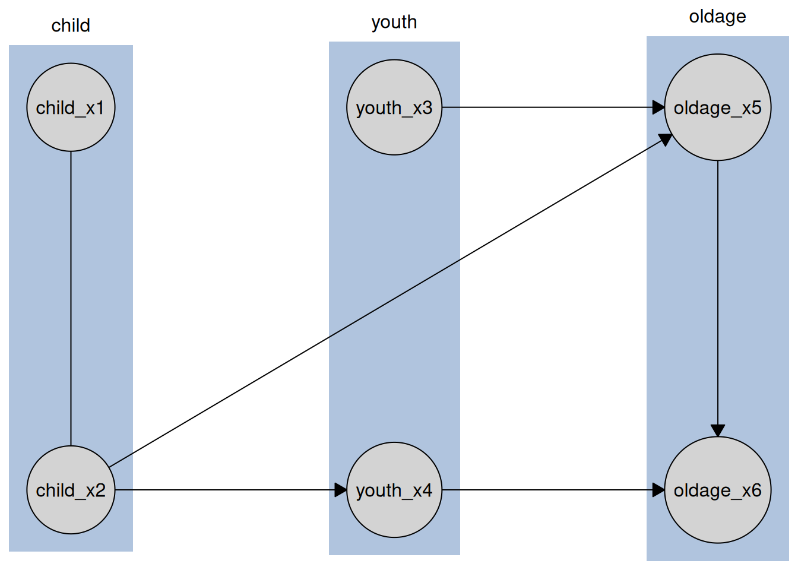

library(causalDisco)
#> causalDisco startup:
#> Java heap size requested: 2 GB
#> Tetrad version: 7.6.10
#> Java successfully initialized with 2 GB.
#> To change heap size, set options(java.heap.size = 'Ng') or Sys.setenv(JAVA_HEAP_SIZE = 'Ng') *before* loading.
#> Restart R to apply changes.This article illustrates how to add a new algorithm to causalDisco from bnlearn, pcalg and Tetrad. Both bnlearn and pcalg are R packages and therefore share the same interface, while Tetrad is a Java library and requires a slightly different integration pattern.
bnlearn and pcalg
Suppose we want to add the Hybrid Parents and Children (HPC) algorithm from bnlearn. We can integrate it into causalDisco by creating a new function hpc().
HPC is a constraint-based algorithm, so it requires a conditional independence test and a significance level alpha. It returns a PDAG, so we set the graph_class attribute to "PDAG".
The function takes an engine argument, which specifies which implementation of the algorithm to use. Even though we only add HPC from bnlearn in this example, we set up the structure to allow for multiple engines in the future. The ... argument allows us to pass additional arguments to the underlying algorithm and test.
The code for the hpc() function is as follows:
hpc <- function(
engine = c("bnlearn"),
test,
alpha = 0.05,
...
) {
engine <- match.arg(engine)
make_method(
method_name = "hpc",
engine = engine,
engine_fns = list(
bnlearn = function(...) make_runner(engine = "bnlearn", alg = "hpc", ...)
),
test = test,
alpha = alpha,
graph_class = "PDAG",
...
)
}We see that the hpc() function is very simple, and all the logic is handled by the make_method() and make_runner() functions.
Once defined, the HPC algorithm can be used like any other method in causalDisco. We first construct the method using hpc(), and then pass it to disco(). Here we demonstrate using the included tpc_example dataset:
data(tpc_example)
hpc_bnlearn <- hpc(engine = "bnlearn", test = "fisher_z", alpha = 0.05)
hpc_bnlearn_result <- disco(tpc_example, hpc_bnlearn)
#> The learned graph is not a valid CPDAG because of conflicting edge orientations, which can happen due to statistical errors in finite samples, violations of faithfulness, or latent confounding; it is reported as PDAG instead.
plot(hpc_bnlearn_result)
To implement a score-based algorithm instead, the structure would remain the same. The main difference is that the method would accept a score argument rather than test and alpha. A hybrid algorithm would accept test, alpha, and score arguments.
To implement an algorithm from pcalg rather than bnlearn, we would follow the same structure but change all instances of "bnlearn" to "pcalg".
A fully custom algorithm implemented in R
Here we show how to use a plain R function you wrote yourself as an algorithm, instead of from a package. The causalDisco engine’s CausalDiscoSearch$set_alg() accepts such a function directly, so you can reuse its data/knowledge/test handling while swapping out only the search procedure.
A constraint-based custom algorithm has the signature function(data, knowledge, suff_stat), mirroring tpc_run()/tfci_run(). A score-based custom algorithm instead has the signature function(score), mirroring tges_run(); pass type = "score" to set_alg() for these. Here we implement a (trivial) constraint-based algorithm that just calls tpc_run() with whatever test the search object was configured with.
To wire this into disco(), with the same knowledge injection and return type as the built-in algorithms, wrap a CausalDiscoSearch object in make_method(), exactly as we did for hpc() above. One thing to watch out for: search$set_test() doesn’t just resolve the test to a function (afterwards available as search$test), it also computes the sufficient statistic that run_search() passes into your algorithm’s suff_stat argument.
my_alg <- function(test = "fisher_z", alpha = 0.05, ...) {
make_method(
method_name = "my_alg",
engine = "causalDisco",
engine_fns = list(
causalDisco = function(test, alpha, ...) {
search <- CausalDiscoSearch$new()
search$set_test(test, alpha)
my_search_alg <- function(data, knowledge, suff_stat) {
tpc_run(
data = data,
knowledge = knowledge,
suff_stat = suff_stat,
test = search$test
)
}
search$set_alg(my_search_alg)
list(
set_knowledge = function(knowledge) search$set_knowledge(knowledge),
run = function(data) search$run_search(data)
)
}
),
test = test,
alpha = alpha,
graph_class = "PDAG",
...
)
}my_alg() can now be used exactly like any built-in method:
data(tpc_example)
kn <- knowledge(
tpc_example,
tier(
child ~ tidyselect::starts_with("child"),
youth ~ tidyselect::starts_with("youth"),
oldage ~ tidyselect::starts_with("oldage")
)
)
result <- disco(
data = tpc_example,
method = my_alg(test = "fisher_z"),
knowledge = kn
)
plot(result)
Tetrad
We will illustrate how to make a custom version (which actually does the same as our implementation, just with some defensive programming omitted) of the BOSS algorithm from Tetrad. Tetrad algorithms follow a slightly different integration pattern because Tetrad is a Java library rather than an R package.
To add a new Tetrad algorithm, first register it with register_tetrad_algorithm(). This function requires:
- The algorithm name.
- A setup function that configures a
TetradSearchobject to execute the algorithm.
The setup function receives the TetradSearch object as its first argument, along with any additional parameters passed via ... when the method is constructed. Its responsibilities are to:
- Configure the TetradSearch object with the appropriate parameters and score.
- Instantiate the correct Tetrad algorithm class.
The fully qualified class name can be identified by inspecting the Tetrad source code at:
https://github.com/cmu-phil/tetrad
Be sure to browse the version corresponding to the installed Tetrad release. The relevant Java classes are located under:
https://github.com/cmu-phil/tetrad/tree/development/tetrad-lib/src/main/java
register_tetrad_algorithm(
"my_boss_variant",
function(
self,
num_starts = 1,
use_bes = TRUE,
use_data_order = TRUE,
output_cpdag = TRUE
) {
self$set_params(
USE_BES = use_bes,
NUM_STARTS = num_starts,
USE_DATA_ORDER = use_data_order,
OUTPUT_CPDAG = output_cpdag
)
self$alg <- rJava::.jnew(
"edu/cmu/tetrad/algcomparison/algorithm/oracle/cpdag/Boss",
self$score
)
self$alg$setKnowledge(self$knowledge)
}
)You can view all the custom registered Tetrad algorithms using list_registered_tetrad_algorithms(), and reset it using reset_tetrad_alg_registry().
The structure of the method function for a Tetrad algorithm is then the exact same as for bnlearn and pcalg, as seen below. BOSS is a score-based algorithm, so it accepts a score argument. The algorithm returns a PDAG, so we set the graph_class attribute to "PDAG".
my_boss_variant <- function(
engine = "tetrad",
score,
...
) {
engine <- match.arg(engine)
make_method(
method_name = "my_boss_variant",
engine = engine,
engine_fns = list(
tetrad = function(...) {
make_runner(engine = "tetrad", alg = "my_boss_variant", ...)
}
),
score = score,
graph_class = "PDAG",
...
)
}We can now run my_boss_variant() like any other method in causalDisco.
# Ensure Tetrad is installed and Java is working before running the algorithm
if (verify_tetrad()$installed && verify_tetrad()$java_ok) {
my_boss_variant_tetrad <- my_boss_variant(
engine = "tetrad",
score = "sem_bic"
)
my_boss_variant_tetrad_result <- disco(tpc_example, my_boss_variant_tetrad)
plot(my_boss_variant_tetrad_result)
}
Once again, if using a hybrid or constraint-based algorithm rather than a score-based one, the structure would remain the same but the method would accept different arguments (e.g., test and alpha for a constraint-based algorithm).
Finally, we clean up the custom registered Tetrad algorithm
A brand-new engine
Everything above adds a new algorithm to one of the built-in engines ("bnlearn", "causalDisco", "pcalg", "tetrad"). This section shows how to add a new engine to causalDisco.
register_engine() takes an engine name, a make_runner_fn, and the packages it depends on. make_runner_fn must accept alg and ..., and must return a runner: a list with a set_knowledge() function and a run() function. This is the same runner shape returned by make_runner() itself, and by the engine_fns we wrote by hand in the “fully custom algorithm” example above. run() should return its graph wrapped with as_disco(), which is what disco(), print(), and plot() expect.
Here we register a (trivial) "always_empty" engine that ignores its input and always returns the empty graph over the columns of the input data, to show the registration mechanics.
always_empty_runner <- function(alg, ...) {
kn <- knowledge()
list(
set_knowledge = function(knowledge) kn <<- knowledge,
run = function(data) {
cg <- caugi::caugi(
from = character(0),
edge = character(0),
to = character(0),
nodes = names(data),
class = "PDAG"
)
as_disco(cg, kn)
}
)
}
register_engine("always_empty", always_empty_runner)With the engine registered, we can wire up a method for it with make_method() and make_runner(), just like hpc() and my_boss_variant() above:
empty_alg <- function(engine = "always_empty", ...) {
engine <- match.arg(engine)
make_method(
method_name = "empty_alg",
engine = engine,
engine_fns = list(
always_empty = function(...) {
make_runner(engine = "always_empty", alg = "empty_alg", ...)
}
),
graph_class = "PDAG",
...
)
}
disco(tpc_example, empty_alg())
#> <Disco CPDAG: 6 nodes | 0 edges>
#> nodes: child_x2, child_x1, youth_x4, youth_x3, oldage_x6, oldage_x5You can view all registered engines with list_registered_engines(), and clear them with reset_engine_registry():
list_registered_engines()
#> [1] "always_empty"
reset_engine_registry()Conclusion
In this article, we have illustrated how to add new algorithms to causalDisco, both from the R packages pcalg and bnlearn and from Tetrad, as well as how to register an entirely new engine backend.
If you have any feedback or suggestions for improvement on the API and functionality for extending causalDisco, please let us know by opening an issue on GitHub.